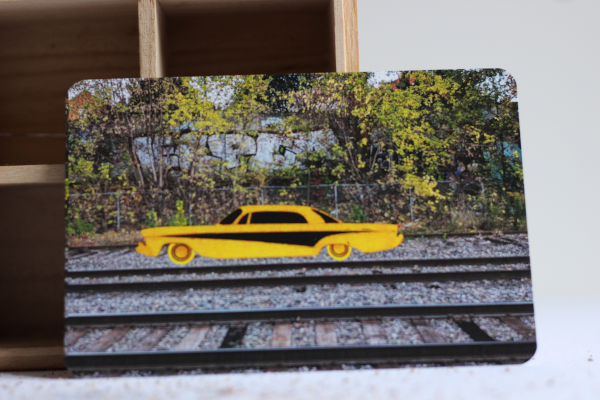

current state of the market
For this first round of Escarcelle, the market will be restricted to postcards.
- one postcard will be about the past: beginner's mind
- one postcard will be about the future: a short winter
- one postcard will be about making things up: orange julep [already reserved]
beginner's mind

Linked souvenir: Let's go slow now to better go fast later. Learning a thing or two while we can still make mistakes. And when everything comes together it will be wonderful and when it all comes together it will.
Identification number: 00a
a short winter

Linked souvenir: A winter so short no one changes their tires anymore. The last shoveling business went bankrupt. Yesterday, I was trying to remember the sound made when walking on fresh snow after a storm.
Identification number: 00b
reserved cards
The following postal cards are already reserved and not currently available.
orange julep [already reserved]

Linked souvenir: Driving in the summer to the other side of the city, radio is on. You get two hot dogs, a Julep and fries. I am the only one who cares about the Julep. I am the only one who cares.
Identification number: 00c
contact
For more information on the project, contact the artist at escarcelle@finartcialist.com.
To see all finartcialist projects, please go to the website finartcialist.com.